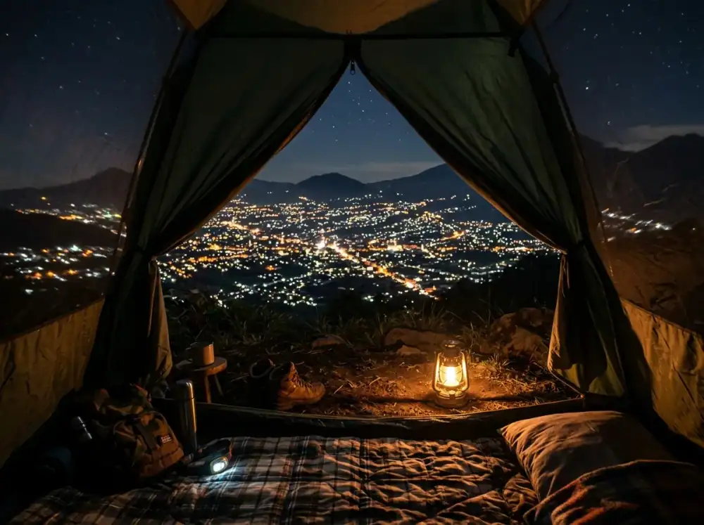

Pernahkah Anda merasa bahwa akhir pekan berlalu begitu saja di depan layar ponsel, hanya untuk melihat orang lain pamer pemandangan alam yang hijau sementara Anda masih menghirup udara AC yang itu-itu saja? Perasaan burnout akibat tekanan kerja atau rutinitas yang monoton bukanlah hal sepele.
Jika terus dibiarkan, rasa jenuh ini bisa berdampak pada produktivitas dan kebahagiaan Anda. Bayangkan betapa menyesalnya Anda jika masa muda atau waktu berharga bersama orang tersayang hanya habis untuk mengeluh tanpa pernah benar-benar "melarikan diri" sejenak mencari ketenangan. Jangan sampai Anda terbangun di hari Senin dengan rasa lelah yang sama hanya karena menunda rencana liburan kecil yang sebenarnya sangat mudah dijangkau dan dipraktikkan.
Di Batu Sunrise Camp, semua alasan "repot" dan "mahal" itu hilang seketika. Mumpung slot untuk akhir pekan ini masih tersedia dan mulai banyak dipesan, inilah saatnya Anda memberikan reward pada diri sendiri sebelum energi mental Anda benar-benar terkuras habis oleh rutinitas.
1. Menemukan Kedamaian di Akomodasi Alam Terbuka
Konsep staycation kini tidak lagi terbatas pada dinding hotel beton dan lantai berkarpet. Banyak orang mulai menyadari bahwa tidur di bawah naungan pohon pinus dengan suara angin yang berdesir memberikan efek relaksasi yang jauh lebih efektif bagi pikiran yang penat. Batu Sunrise Camp hadir sebagai solusi bagi Anda yang ingin mencoba camping tapi masih ragu dengan segala keribetannya sejak zaman ospek kuliah dulu.
Dari Camping Mandiri Hingga Glamping "Terima Beres"
Di sini, Anda tidak dipaksa untuk menjadi ahli survival ala Bear Grylls. Pengelola menyediakan spektrum pilihan yang sangat luas, mirip seperti memilih paket data internet—semua tergantung kebutuhan Anda, budget, dan seberapa besar Anda ingin melibatkan diri dalam mempersiapkan tempat tidur malam Anda.
- Area Lahan Mandiri: Bagi yang ingin merasakan sensasi memasak sendiri dan membawa peralatan kebanggaannya, tersedia lahan camp premium dengan akses listrik setiap kavlingnya. Anda bisa bebas menentukan sudut terbaik dan menata pasak tenda semandiri mungkin.
- Paket Semi-Glamping: Bagi yang ingin datang dengan gaya "koper" tanpa mau pusing memikirkan tenda bocor atau matras tipis yang membuat punggung linu keesokan harinya, paket semi-glamping adalah pilihan mutlak. Semuanya sudah berdiri kokoh saat Anda tiba, jadi Anda bisa langsung duduk santai menyeduh secangkir kopi hangat yang sudah Anda idam-idamkan sepanjang minggu.

2. Destinasi Scenic Spot: Terapi Mata dengan Sunrise dan City Light
Ada alasan kuat mengapa para konten kreator rela menempuh perjalanan ke kawasan Goa Pinus di Dusun Gunungsari ini. Nilai estetika visual yang ditawarkan tempat ini sangat fantastis, menjadikannya salah satu titik peninjauan pemandangan terbaik (scenic spot) di seluruh wilayah Kota Batu, baik ketika malam maupun sebelum fajar menyingsing.
Golden Hour yang Tidak Pernah Gagal
Menyaksikan matahari terbit (sunrise) secara langsung dengan mata telanjang dari ketinggian adalah salah satu bentuk meditasi alamiah dan paling murni. Di Batu Sunrise Camp, Anda tidak perlu lagi mendaki gunung terjal berjam-jam lamanya dalam kegelapan yang menakutkan. Cukup buka sedikit resleting luar tenda Anda saat alarm berbunyi puku 05.00 WIB pagi, dan Anda langsung disuguhi gradasi warna lautan langit jingga yang amat menakjubkan. Momen emas ini seringkali menjadi titik balik bagi banyak orang untuk me-reset kembali pikirannya agar merasa lebih bersyukur dan tenang mengarungi minggu depan.
City Light Malang Raya: Menikmati Malam Tanpa Kebisingan
Tidak hanya mentari pagi saja yang indah. Saat hari berganti malam, pesonanya sama sekali tak menyusut. Terhampar keindahan ribuan titik cahaya lampu kota Malang dari ketinggian. Jika biasanya saat Anda berada di tengah kota, pendaran lampu-lampu itu berarti kemacetan yang mengekang, lembur, dan suara bising decit klakson. Sebaliknya di ketinggian sini, kelap-kelip cahaya pijar di bawah laksana hamparan perhiasan permata atau instalasi seni raksasa yang menenangkan urat syaraf Anda yang tegang.
3. Fasilitas Modern: Nyaman di Alam Tanpa Putus Koneksi
Salah satu keunggulan Batu Sunrise Camp yang sangat disukai para millenial adalah kemampuannya menghadirkan kepraktisan modern tanpa merusak konsep asri hutan gunung. Anda bisa mendapatkan benefit liburan primitif, tanpa sama sekali harus merasa terisolasi sepenuhnya (kecuali jika itu memang menjadi keinginan kuat Anda).
Tetap Eksis dengan WiFi dan Listrik
Bukan rahasia bila di abad ini, mengabadikan dan membagikan kebahagiaan sosial merupakan bagian integral dari terapi anti-stres liburan itu sendiri. Untung saja, signal kencang tersedia, bahkan dengan akses fasilitas WiFi gratis dan port colokan listrik berlimpah di area terdekat dari tenda-tenda camp Anda, Anda nyaris tak akan sampai keubisan level baterai di saat momen paling dramatis terjadi.
Sanitasi Bersih dan Kafe untuk Konsumsi
Bagi pelancong pemula, isu minimnya fasilitas kamar kecil merupakan hambatan serius minat mereka mendatangi destinasi bertema petualangan alam. Jangan khawatir, kerisauan tersebut sepenuhnya terpatahkan karena instalasi toilet yang kami miliki rutin dibersihkan petugas. Tambahannya yang amat premium adalah shower hot-water atau bilik air hangatnya yang pasti menjaga suhu konstan 37°C di tengah udara dingin malam Pegunungan Batu. Serta bila mendadak lapar menyerang, kafe pun siaga di area sekitar dan menerima beragam varian kudapan ringan sampai asupan porsi berat tanpa Anda perlu mencuci piring sendirian seusainya.
4. Destinasi Ramah Keluarga dan Pet-Friendly
Bukan sekadar perkemahan remaja, tetapi ini adalah taman bermain serba lintas umur. Mencari tempat pelarian yang bisa mengakomodasi semua anggota keluarga, keponakan bandel, bahkan anak bulu atau peliharaan mungil kesayangan memang menjadi teka-teki. Kabar baiknya, Batu Sunrise Camp sangat bersahabat bagi komunitas penggemar jalan-jalan bersama hewan (pet friendly rules applies secara bertanggung jawab).
Wisata Edukasi untuk Si Kecil
Ketimbang membelikan anak Anda iPad baru untuk membungkam kebosanannya, jauh lebih merasuk manfaatkan liburan sembari mengamalkannya sekolah pergaulan alam. Biarkan tangan kecil mereka mencicipi dedaunan bertekstur, hirup udara lembap di pagi hari, maupun tertawa merasakan pancaran hawa perapian tungku api unggun langsung. Lahan kemah memiliki pembagian kontor tanah rumput landai bebas dari tepian curam tebing, memberi toleransi kelegaan ruang berlarian bagi putra-putri tercinta di bawah tatapan pengawasan wajar kita selaku pendampingnya.
Penutup: Jangan Tunggu Sampai Benar-benar Tumbang
Kita seringkali merasa bahwa liburan harus direncanakan jauh-jauh hari dengan nominal rupiah besar. Padahal, penawar lelah sejati dapat diperoleh dengan melipir berkendara selama beberapa menit menjauhi pusat kemacetan Kota. Batu Sunrise Camp hadir menyadarkan bahwa kebahagiaan sejati amatlah sederhana; sebuah matras tebal yang hangat, hirupan secangkir kopi tubruk favorit, ditemani sapuhan angin merdu plus pendar cahaya bintang Malang dari kejauhan.
Jangan sampai Anda menyesal karena tak henti mendahulukan beban tumpukan pekerjaan hingga fisik ambruk berkeping-keping. Segera kunci penanggalan kosong Anda, gulung kembali parka tebal pelindung tubuh Anda, peluk keluarga Anda, dan biarkan kemurahan hutan alami ini menyembuhkan akumulasi lelah batin mingguan Anda. Healing sekarang sebelum kehabisan spot tempat!
5. FAQ Relevan untuk Audiens
Adiel Ebert Nakula Shandy
Senior Outdoor Enthusiast & Web Developer. Penggemar aktivitas alam dan kuliner camping.